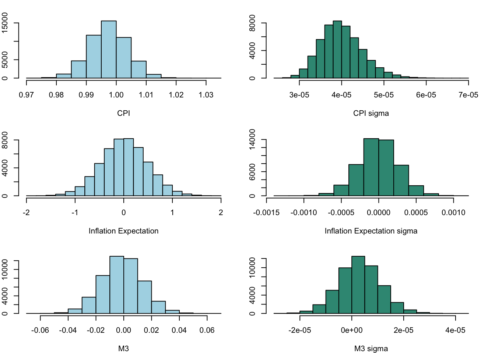

Forecasting Australian Inflation Rate Using Bayesian VAR model
Abstract. The purpose of this research is to explore the trend in Australia’s inflation rate over the next two years using the Bayesian Vector Auto-regression (BVAR) model.
Keywords. bsvars, quarto, R, Australia inflation rate
Introduction
Question Objective and Motivation
Question:
Will Australia’s inflation rate fall back to the 2-3% inflation target range in 2025?
Objective and Motivation:
Inflation has always been a topic of interest for economists, as trends in the inflation rate provide essential guidance for key decisions by economic participants, thus playing a crucial role in the economic and social development of a country (Bernoth and Ider 2021). The Reserve Bank of Australia (RBA) forecasts that by 2025, inflation will fall back to the target range of 2% to 3% and reach the midpoint of this range by 2026. Influenced by the COVID-19 pandemic, Blot et al. deduced that the inflation rate is affected by a variety of factors, such as GDP, exchange rates, interest rates, and unemployment rates (European Parliament. Directorate General for Internal Policies of the Union. 2022). Therefore, this study will assess the reasonableness of the RBA’s inflation rate forecast for the next two years. During the COVID-19 period, Australia’s inflation rate sharply rose to 7.8%, in response to which the RBA implemented a monetary tightening policy and began raising interest rates at the end of 2022, slowing the pace of rate hikes in the latter half of 2023. Hence, this report will further discuss whether the RBA has correctly assumed that its monetary policy measures have effectively curbed inflation.
Data and Data Properties
Data Selection and Rationale
Direct Inflationary Indicators:
1.\(cpi_t\): Consumer Price Index (CPI) from ABS.
CPI directly measure inflation by follow formula:
\[Inflation = (\frac{CPI_{Quarter \ of \ These \ Year}}{CPI_{Quarter \ of \ Previous \ Year} } - 1 )\times 100 \tag{1}\]
CPI is the basic data for measuring inflation. It is more stable and less affected by seasonal factors and short-term fluctuations than the annual inflation rate from which it is derived. In VAR, raw time series data rather than rates of change are used to capture and model the dynamic nature of the data.
2.\(infexp_t\): Business inflation expectations – 3-months ahead from RBA
Inflation expectations often guide consumer and business behavior; if inflation is expected to rise, they might make purchases and raise prices in advance, thus driving actual inflation up in the short term. Meanwhile, central banks closely monitor inflation expectations, adjusting monetary policies to influence these expectations and control actual inflation to maintain price stability.
Economic Activity and Policy Indicators:
- \(gdp_t\): Gross Domestic Product (GDP) from ABS.
GDP reflects the size and growth rate of a country’s economy. When GDP increases, it indicates increased economic activity, which can lead to demand-pull inflation because increased demand may exceed current production capacity, pushing up prices.
- \(crt_t\): Cash rate target published by RBA.
This is the main tool used by the RBA to influence economic activity. Raising the cash rate is usually aimed at reducing borrowing and spending, thereby reducing inflationary pressures.
- \(unemp_t\): Unemployment rate from ABS.
It indicate the level of slack in the labor market, influencing wage-push inflation.
- \(m_t\): Money aggregate (Broad money) from RBA.
‘Broad money’ is defined as ‘M3’ plus ‘Other borrowings from private sector by AFIs’. When the growth rate of broad money supply in an economy exceeds the growth rate of its real output, it leads to more money chasing the same amount of goods and services, causing price levels to rise, i.e., inflation. Therefore, central banks like the Reserve Bank of Australia (RBA) adjust interest rates and other tools to control the growth of broad money to achieve their inflation targets.
Market and External Trade Indicators:
- \(export_t\): International exports from ABS.
It affects trade balance and currency strength, influencing imported inflation.
- \(import_t\): International imports from ABS.
Directly affect inflation through the cost of imported goods.
- \(aord_t\): All Ordinaries Index (AORD) from yahoo finance.
It reflects investor confidence and economic activity which can be pre-emptive indicators of inflation.
- \(exr_t\): AUD/USD exchange rate from RBA.
It affects the price of imports and exports, contributing to inflation.
Following Table shows the correlation between CPI and other variables.
Despite the low direct correlation between inflation expectations and CPI, inflation expectations may more closely reflect concerns about core inflation, which excludes volatile items like food and energy, whereas the CPI includes all items. If the trends between core inflation and overall inflation differ, this discrepancy can reduce the correlation between inflation expectations and the CPI. However, inflation expectations provide additional insight into how future economic conditions are perceived by consumers, businesses, and investors. This forward-looking perspective is important as it might influence economic decisions that are not immediately apparent through current CPI data.
Exchange rate fluctuations are typically sensitive to immediate market sentiment and short-term capital flows, whereas the CPI, as a measure of past price level changes, often exhibits a lag in responding to market changes. Even if the correlation between the CPI and the AUD/USD exchange rate is low, including this variable can help researchers understand economic changes from a broader perspective. For example, changes in the exchange rate can indirectly affect domestic price levels through the cost of imports, especially in open economies.
It should be noted that the unemployment rate exhibits a weak correlation with the CPI. This could be attributed to the Phillips Curve, which illustrates a short-term inverse relationship between unemployment and inflation. Over the long term, however, this correlation may diminish due to various influencing factors. For instance, following COVID, the inflation rate in the United States has been continuously rising due to the bankruptcy crisis among small and medium-sized enterprises (SMEs), part of which is attributed to the inadequate supply of export goods produced by SMEs leading to a decline in export volumes, thereby driving up the domestic inflation rate in the US (Kalemli-Ozcan et al. 2020). This impact can be seen as an indirect effect of rising unemployment rates on inflation. Therefore, despite the weak correlation between unemployment rate and CPI, it is still important to include it in the model for a comprehensive analysis.
Figure 1 Correlation Matrix
In summary, the dataset included data from 1990Q2 to 2023Q4, total 136 observation points with 10 variables.
Data Transformation
- Quarterly Transformation
All data have been quarterly converted by selecting the data on the last day of the quarter as the observation. One of the reasons for not using monthly data is that high-quality quarterly economic data are more readily available compared to monthly data. In this report, the key data, CPI, which published on ABS, and the monthly data starting point is Q3 of 2017. Since the research wanted to capture longer-term data, quarterly data was considered. Also, policymakers and economists often rely more on quarterly data for decision-making because it provides a more stable and comprehensive view of economic conditions to some extent. This stability is key to understanding and predicting economic trends, especially when considering the long-term impacts of policies.
- Log Transformation
Based on the line graph of the original data below (Figure 2), we can observe that exponentially growing variables need to be linearized, such as \(cpi_t\), \(gdp_t\), \(m_t\), \(export_t\), \(import_t\), \(aord_t\). Therefore, its logarithmically transformed form will be used in the following analysis.

Figure 2 Line plot of original data
- Integration transformation
According to ACF plot for all data (Figure 3), we can see all data with autocorrelation. It suggests that the series is not white noise and might not be stationary. In this case, applying a differencing operation, such as a first difference (single-order integration), can help remove the autocorrelation and achieve stationary.

Figure 3 ACF Plot for all data
Considering the selection of the order of single-order integration, the unit root test (ADF test) is used and the p value is used to determine its significance. A small p-value means the null hypothesis is rejected (non-stationary).
According to Table 1, we can see that \(infexp_t\), \(lm_t\), require more than first order integration, while other require first-order integration(under 5% level of confidence).
| p value of ADF test of AR | p value of ADF test of diff-AR | conclusion | |
|---|---|---|---|
| lcpi | 0.9864 | 0.1132 | lcpi~I(n) |
| infexp | 0.0123 | 0.0100 | infexp~I(1) |
| lgdp | 0.0223 | 0.0100 | lgdp~I(1) |
| crt | 0.5912 | 0.0111 | crt~I(1) |
| unemp | 0.3029 | 0.0100 | unemp~I(1) |
| lm | 0.9054 | 0.2152 | lm~I(n) |
| lexport | 0.4567 | 0.0100 | lexport~I(1) |
| limport | 0.9341 | 0.0100 | limport~I(1) |
| laord | 0.5570 | 0.0100 | laord~I(1) |
| exr | 0.2857 | 0.0100 | exr~I(1) |
Table 1 Unit root test for all data
Given that differencing might eliminate some of the long-term information (like trends) within the data, and considering the Minnesota prior method can be effective with nonstationary data, we have opted apply first differencing to all of the data sets.
After logarithmic transformation of part of the data, the line plot of the dataset is as shown below (Figure 4). Even after first order difference processing, the dataset still retains some trend characteristics. For example, almost all variables showed significant changes before and after COVID (the x-aisx is 120).

Figure 4 Line plot of adjusted data
Importance of Key Variables Analysis
The model selects ten variables related to Australian inflation. Among the variables most directly related to inflation is inflation and inflation target. Meanwhile, because we use CPI as key variable, we first need to calculate quarterly inflation through CPI. Below we focus on analyzing these two variables:
The actual and expected inflation rates appear to move in tandem over much of the time period, suggesting that expectations may be influenced by current and past inflation rates, or vice versa. At the same time, we see that people’s expectations for inflation are relatively conservative. For example, during the COVID, the expected inflation was around 5%, but the actual inflation later surged to about 7.8%.
Regarding the specific inflation zone of 2-3%, it appears that both the expected and actual inflation rates oscillate into this range periodically. However, it seems that starting just before 2020, there’s a pronounced peak where expected inflation sharply rises above the actual inflation rate, which then converges back into the 2-3% range shortly after (although actual inflation rate still need some time). So we can foresee that inflation will indeed fall back to the 2-3% range in the near future.

Figure 5 Inflation Rate vs Expected Inflation Rate
Model and Hypothesis
Regarding model selection, the VAR model, capable of concurrently integrating the effects of multiple economic indicators on inflation such as GDP, exchange rates, interest rates, unemployment rates, and other variables, offers coherent and reliable results by analyzing the time series of these variables for data analysis and forecasting (Stock and Watson 2001).
Based on the above analysis, all 10 variables play an important role in the fitting of the model. Use VAR(p) model for modeling, where N=10, T=135.
\[y_t = \mu_0 + A_1y_{t-1} +...+A_py_{t-p} +\epsilon_t \\ \epsilon_t|Y_{t-1} \sim iid \mathcal{N}_{10}(\textbf{0}_{10}, \Sigma) \tag{2}\]
In matrix notation:
\[Y = X A +E \\ E|X\sim \mathcal{MN}_{T\times 10}(\textbf{0},\Sigma,I_T) \tag{3}\]
\(Y\) is \(T\times 10\)matrix of dependent variables.
\(X\) is \(T \times (1 + 10p)\) matrix of independent variables.
\(A\) is the matrix of coefficients, which includes the constant term \(\mu_0\) and the autoregressive coefficients.
\[ Y= \begin{bmatrix} y_{lcpi,1} & y_{infexp,1} & y_{lgdp,1} & y_{crt,1} & y_{unemp,1} & y_{lm,1} & y_{lexport,1} & y_{limport,1} & y_{laord,1} & y_{exr,1}\\ \ y_{lcpi,2} & y_{infexp,2} & y_{lgdp,2} & y_{crt,2} & y_{unemp,2} & y_{lm,2} & y_{lexport,2} & y_{limport,2} & y_{laord,2} & y_{exr,2} \\ \vdots & \vdots & \vdots& \vdots& \vdots& \vdots& \vdots& \vdots& \vdots & \vdots \\ y_{lcpi,T} & y_{infexp,T} & y_{lgdp,T} & y_{crt,T} & y_{unemp,T} & y_{lm,T} & y_{lexport,T} & y_{limport,T} & y_{laord,T} & y_{exr,T}\\ \end{bmatrix}_{T \times 10} \]
\[ X=\begin{bmatrix} 1 & y_{lcpi,t-1} & y_{infexp,t-1} & \ldots & y_{exr,t-1} & \ldots & y_{lcpi,t-p} & y_{infexp,t-p} & \ldots & y_{exr,t-p} \\ 1 & y_{lcpi,t-2} & y_{infexp,t-2} & \ldots & y_{exr,t-2} & \ldots & y_{lcpi,t-p-1} & y_{infexp,t-p-1} & \ldots & y_{exr,t-p-1} \\ \vdots & \vdots & \vdots & \ddots & \vdots & \ddots & \vdots & \vdots & \ddots & \vdots \\ 1 & y_{lcpi,1} & y_{infexp,1} & \ldots & y_{exr,1} & \ldots & y_{lcpi,1-p} & y_{infexp,1-p} & \ldots & y_{exr,1-p}\\ \end{bmatrix}_{T\times (1+10p)} \]
\[ A = \begin{bmatrix} \mu_{lcpi} & \mu_{gold} & \ldots & \mu_{lexr} \\ A_{1,lcpi}^{(1)} & A_{1,infexp}^{(1)} & \ldots & A_{1,exr}^{(1)} \\ A_{2,lpci}^{(1)} & A_{2,infexp}^{(1)} & \ldots & A_{2,exr}^{(1)} \\ \vdots & \vdots & \ddots & \vdots \\ A_{10,lcpi}^{(1)} & A_{10, infexp}^{(1)} & \ldots & A_{10,exr}^{(1)} \\ \vdots & \vdots & \ddots & \vdots \\ A_{1,lcpi}^{(p)} & A_{1,infexp}^{(p)} & \ldots & A_{1,exr}^{(p)} \\ A_{2,lcpi}^{(p)} & A_{2,infexp}^{(p)} & \ldots & A_{2,exr}^{(p)} \\ \vdots & \vdots & \ddots & \vdots \\ A_{10,lcpi}^{(p)} & A_{10,infexp}^{(p)} & \ldots & A_{10,exr}^{(p)} \\ \end{bmatrix}_{(1 + 10p)\times 10} \]
\[ \begin{align*} E &= \begin{bmatrix} \epsilon_{1,lcpi} & \epsilon_{1,infexp} & \ldots & \epsilon_{1,exr} \\ \epsilon_{2,lcpi} & \epsilon_{2,infexp} & \ldots & \epsilon_{2,exr} \\ \vdots & \vdots & \ddots & \vdots \\ \epsilon_{T,lcpi} & \epsilon_{T,infexp} & \ldots & \epsilon_{T,exr} \end{bmatrix}_{T\times 10} \\ \end{align*} \]
Model Application and Objective Fulfillment
Based on the model above, we will employ VAR of order p to carry out forecasts for the next two years. Given that the data is quarterly, setting the forecast horizon (h) to 8 quarters for our iterative forecasting process.
In the forecasting process, we will concentrate on determining the conditional mean and confidence interval of the projected CPI, denoted as \(lcpi_{T+h|T}\). Subsequently, we’ll utilize the forecasted (log) CPI values to calculate the inflation rate and assess whether it aligns with the target inflation range of 2-3%.
Estimation Procedure and Algorithm
Basic Model
The basic model based on the natural-conjugate prior distribution, which is specified as a matrix normal inverse Wishart distribution (Woźniak 2022). Minnesota prior with some stylised facts about the macroeconomic time series, since \(lcpi_t\) and \(lm_t\) are unit root non-stationary and other all variables are stationary, is applied to form the specifications of the prior distribution.
The estimation procedures to draw from the posterior follows the steps below:
Step 1: Prior distribution is presented below. We will specify \(\underline{A}\), \(\underline{V}\), \(\underline{S}\) and \(\underline{v}\).
$$ \[\begin{align} p(A,\Sigma) &\propto L(A,\Sigma | Y,X) \ p(A|\Sigma) \ p(\Sigma) \\ p(A,\Sigma|Y,X) &= p(A|Y,X,\Sigma) \ p(\Sigma|Y,X) \\ \\ A|\Sigma &\sim \mathcal{MN}_{K\times N}(\underline{A}, \Sigma,\underline{V}) \\ \Sigma &\sim \mathcal{IW}_{N}(\underline{S}, \underline{v}) \end{align}\] $$ {#eq-4}
- \(\underline{A}\) is a \(K \times 10\) matrix, reflect the random walk with no drift process on the first lag of \(lcpi_{t}\) and \(lm_{t}\), and 0 elsewhere.
$$ = ’ $$
\(\underline{V}\) represents the shrinking level of the specified \(\underline{A}\).
It’s a \(K\) vector diagonal matrix with the diagonal elements set to be the desired shrinking level.
\[ \underline{V} = diag\left[ \underbrace{\kappa_{2}}_{intercept} \quad \underbrace{\kappa_{1}(\textbf{p} ^{-2}\otimes I^{'}_{N})}_{A_{1} \ to \ A_{p}} \right] \]
\(\underline{S}\) is \(10\times10\) symmetric matrix where the diagonal represents the variances of individual variables (diagonal of \(\Sigma\)) and the off-diagonals are 0.
\(\underline{v}\) is degree of freedom, and it is a single values because variance is assumed to be the same for all elements of \(\Sigma\).
Step 2: Posterior distribution shows below with the implementation of the specification in Step 1
\[ \begin{align} p(A,\Sigma | Y,X) &= p(A|Y,X,\Sigma) \ p(\Sigma|Y,X) \\ p(A|Y,X,\Sigma) &\sim \mathcal{MN}_{K\times N}(\overline{A}, \Sigma,\overline{V} ) \\ p(\Sigma|Y,X) &\sim \mathcal{IW}_{N}(\overline{S}, \overline{v}) \end{align} \tag{4}\]
Therefore we can get:
\[ \begin{align} \overline{A} &= \overline{V}(X'Y+\underline{V}^{-1}\underline{A}) \\ \overline{V} &= (X'X + \underline{V}^{-1})^{-1} \\ \overline{S} &= \underline{S}+Y'Y+\underline{A'} \ \underline{V}^{-1}\underline{A}-\overline{A'}\overline{V}^{-1}\overline{A} \\ \overline{v} &= T + \underline{v} \end{align} \]
Step 3: As \(\overline{A}\), \(\overline{V}\), \(\overline{S}\) and \(\overline{v}\) are specified:
- Firstly, draw \(\Sigma\) from \(\mathcal{IW}_{10}(\overline{S}, \overline{v})\), and take \(\Sigma\) as known
- Secondly, insert it in \(\mathcal{MN}_{K\times 10}(\overline{A}, \Sigma,\overline{V} )\) to draw \(A\)
## Posterior sample draw function for basic model(posterior.draws)
posterior.draws = function (S, Y, X){
# normal-inverse Wishard posterior parameters
V.bar.inv = t(X)%*%X + diag(1/diag(V.prior))
V.bar = solve(V.bar.inv)
A.bar = V.bar%*%(t(X)%*%Y + diag(1/diag(V.prior))%*%A.prior)
nu.bar = nrow(Y) + nu.prior
S.bar = S.prior + t(Y)%*%Y + t(A.prior)%*%diag(1/diag(V.prior))%*%A.prior - t(A.bar)%*%V.bar.inv%*%A.bar
S.bar.inv = solve(S.bar)
# posterior draws
Sigma.posterior = rWishart(S, df=nu.bar, Sigma=S.bar.inv)
Sigma.posterior = apply(Sigma.posterior,3,solve)
Sigma.posterior = array(Sigma.posterior,c(N,N,S))
A.posterior = array(rnorm(prod(c(dim(A.bar),S))),c(dim(A.bar),S))
L = t(chol(V.bar))
for (s in 1:S){
A.posterior[,,s]= A.bar + L%*%A.posterior[,,s]%*%chol(Sigma.posterior[,,s])
}
output = list(A.posterior=A.posterior, Sigma.posterior=Sigma.posterior)
return(output)
}Below are the trace plots and histograms posterior to draws on \(A\) and \(\Sigma\). It is clear from the trace plots that CPI has a very strong perfect positive correlation with its own preceding period, which is consistent with the previous distribution design and the anticipation of integration at 1.

Figure 6 CPI simulation of basic model
Model Extension
The model extension base on a hierarchical model. The gamma distribution on the Minnesota shrinkage parameter lambda \(\lambda\) is introduced to adjust kappa \(\kappa\).
Step 1: Prior distribution is presented below. We will specify \(\underline{A}\), \(\underline{V}\), \(\underline{S}\), \(\underline{v}\) by Minnesota shrinkage parameter lambda \(\lambda\).
$$
\[\begin{align} p(A,\Sigma, \lambda |Y,X) &\propto L(A,\Sigma | Y,X) \ p(A,\Sigma, \lambda) \\ &\propto L(A,\Sigma | Y,X) \ p(A |\Sigma, \lambda) \ p(\Sigma) \ p(\lambda) \end{align}\]
$$ where, each \(p(A |\Sigma, k)\), \(p(\Sigma)\), \(p(k)\) is specified below:
\[ \begin{align} A |\Sigma, \lambda &\sim \mathcal{MN}_{K\times N}(\underline{A}, \Sigma, \lambda\underline{V})\\ \Sigma &\sim \mathcal{IW}_{N}(\underline{S},\underline{v})\\ \lambda &\sim \mathcal{Gamma}(\underline{S_{\lambda}}, \underline{v_{\lambda}} ) \\ \end{align} \]
The prior distribution is shown in the same way as the Step 1 of basic model.
Step 2: Posterior distribution shows below with the implementation of the specification in Step 1 by multiply \(L(A,\Sigma | Y,X) \ p(A |\Sigma, \lambda) \ p(\Sigma) \ p(\lambda)\)
References
Bernoth, Kerstin, and Gökhan Ider. 2021. “Inflation in the Euro Area: Factors Mostly Have Only a Temporary Effect, but Risk of Prolonged Elevated Inflation Remains.” DIW Weekly Report. https://doi.org/10.18723/DIW_DWR:2021-41-1.
European Parliament. Directorate General for Internal Policies of the Union. 2022. Inflation expectations in the euro area: trends and policy considerations : monetary dialogue papers : February 2022. LU: Publications Office. https://doi.org/10.2861/744032.
Kalemli-Ozcan, Sebnem, Pierre-Olivier Gourinchas, Veronika Penciakova, and Nick Sander. 2020. “COVID-19 and SME Failures.” IMF Working Papers 2020 (207): 1. https://doi.org/10.5089/9781513557748.001.
Stock, James H, and Mark W Watson. 2001. “Vector Autoregressions.” Journal of Economic Perspectives 15 (4): 101–15. https://doi.org/10.1257/jep.15.4.101.
Woźniak, Tomasz. 2022. Bsvars: Bayesian Estimation of Structural Vector Autoregressive Models. R Package. https://cran.r-project.org/package=bsvars.